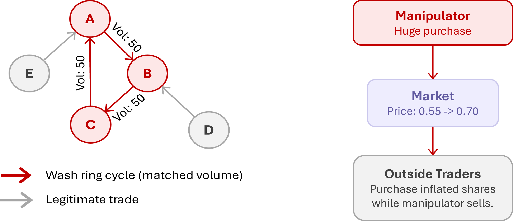
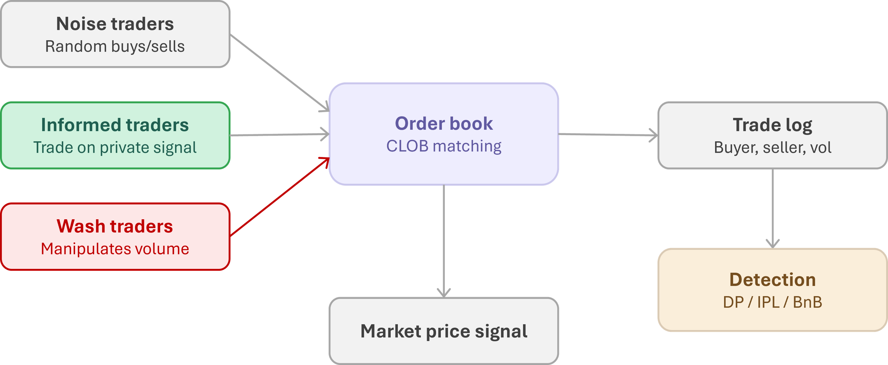
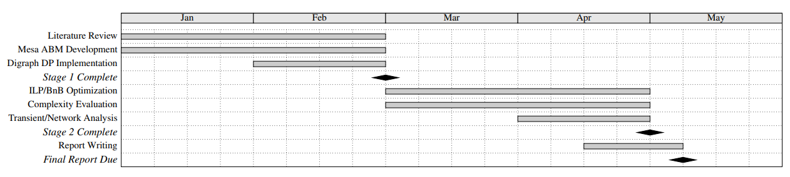
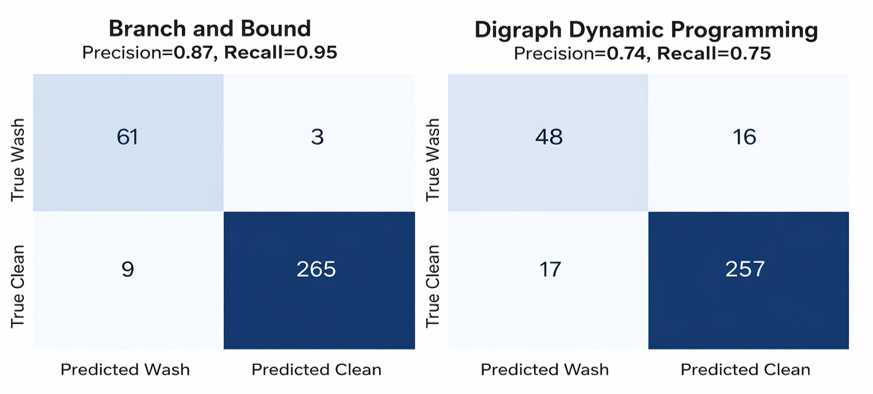
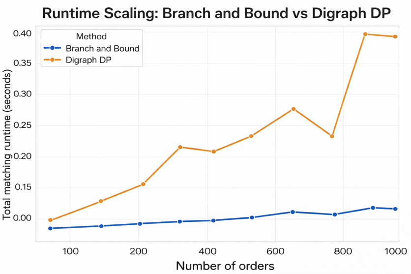
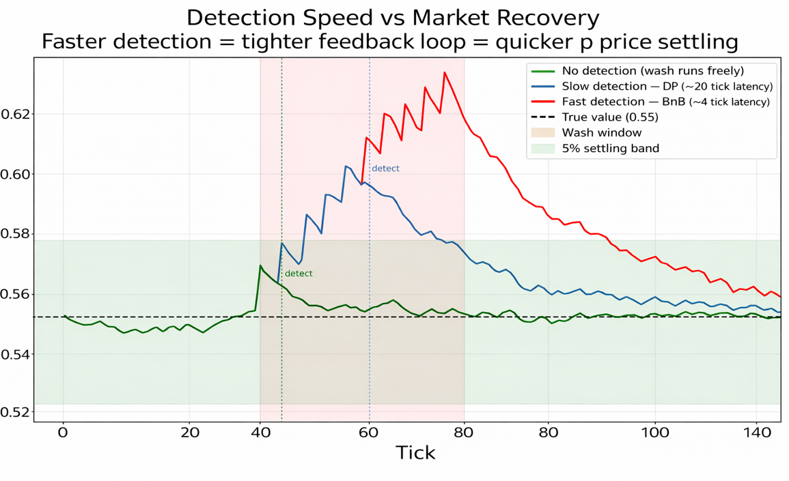
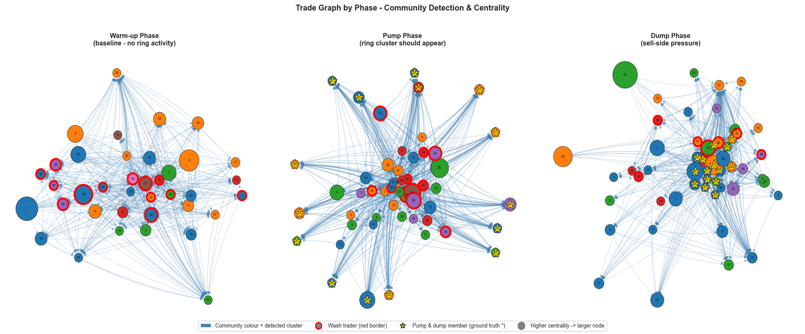

This project studies market integrity in prediction markets through a simulation and detection framework grounded in market microstructure and optimization. Prediction markets operate through event contracts that trade between zero and one, where the price reflects the implied probability of an event occurring. The reliability of this depends on sufficient liquidity, balanced participation, and resistance to strategic interference. In practice, those conditions are often not met, especially in thinly traded markets.
We developed a modular agent-based system using the Mesa framework, structured around a continuous double auction with a central limit order book. The system supports heterogeneous agents including noise traders, informed traders, and multiple classes of strategic manipulators. The central methodological focus is wash trading detection under a fixed structural formulation, comparing Dynamic Programming, Integer Linear Programming, and Branch and Bound. BnB achieves higher detection accuracy and computational efficiency relative to the other methods, with the pruning mechanism allowing large portions of the solution space to be eliminated early based on bounding conditions.
Prediction markets have emerged as a mechanism for aggregating dispersed information into a single market signal through trading activity. Prices are interpreted as implied probabilities of future outcomes. Prior work has shown that prediction markets can perform competitively with, and sometimes outperform, traditional forecasting methods like polling or expert analysis.
Because these probabilities are observable and widely referenced in media, policy discussions, and strategic decision-making, they extend beyond purely financial relevance and can influence perception and belief formation. This creates a feedback loop where market prices don't just reflect beliefs but can also shape them.
Manipulation risk is real. Rasooly and Rozzi demonstrated through a large-scale field experiment that prediction markets are manipulable, showing that even relatively small trades could produce price effects persisting up to 60 days. In low-liquidity environments, fewer counteracting trades exist to correct distortions, allowing manipulative behavior to have a stronger and longer-lasting effect.

Wash trading operates through cyclic self-matching, where a set of colluding agents trade among themselves in a closed loop. Agent A sells to agent B, who sells back to A, inflating volume without any real transfer of ownership. A more complex variant involves coordinated ring structures where multiple agents form a directed cycle (A → B → C → A). No individual transaction appears suspicious in isolation, but the aggregate structure forms a closed flow of trades.
Whale distortion is modeled through a high-capital agent that initiates aggressive buy orders, driving the mid-price upward. This is followed by a reversal phase where the agent exits positions through sell orders once others have responded to the artificially elevated price. Unlike wash trading, which primarily affects volume and trade structure, whale-based manipulation produces a transient shock in price dynamics.
The market environment is implemented using Mesa, replicating a continuous double auction with a central limit order book. The CLOB maintains bids in descending price order and asks in ascending order. The matching engine follows price-time priority. Partial fills are supported. The simulation tracks all executed trades including price, volume, timestamp, and participating agents.

The detection framework is built on a digraph representation of trade flows where nodes are traders and directed edges are executed transactions. Wash trading is defined through two properties: trades must occur in tightly matched pairs satisfying constraints on time, price, and volume, and they must collectively form a closed cycle where total signed volume sums to zero. The subset selection problem is equivalent to a knapsack formulation. DP is the baseline, recursively constructing feasible subsets, but the number of possible subsets grows combinatorially.
The detection problem is re-expressed as an ILP. Each candidate trade gets a binary decision variable indicating whether it's selected as part of a wash structure. The objective maximizes total matched volume across selected trades. The core constraint enforces flow conservation: for each trader, the sum of signed trade volumes must be zero. This directly encodes the structural definition of wash trading from the digraph representation.
BnB is applied to the same subset selection problem. It traverses the search space as a decision tree where each level corresponds to including or excluding a trade. At each node, an upper bound on the achievable objective is computed. If this bound is less than the best solution found so far, the branch is pruned. In the implemented system, pruning is particularly effective because trades are pre-filtered based on tight constraints in time, price, and volume, which significantly reduces the number of feasible combinations.
When the whale agent injects a capital shock, the mid-price reacts like a dynamical system getting hit with a step disturbance. Three control theory metrics are used: overshoot (how far above true value the price gets at peak), undershoot (the drop below fair value during the dump phase), and settling time (how many ticks until the price stays within a 5% band around true value).
| Power Grid Concept | Market Equivalent |
|---|---|
| Steady-state voltage | Fair-value price (true probability) |
| Load disturbance / fault | Manipulation shock |
| Settling time | Steps until price returns within ε of fair value |
| Overshoot / undershoot | Max deviation above/below fair value after shock |
| System impedance | Price impact per unit manipulation pressure |
Literature review, Mesa ABM development, CLOB/CDA implementation, digraph DP detection. Demonstrated computational limitations of DP approach.
ILP and BnB implementation, complexity evaluation, manipulation regime design. BnB identified as only real-time viable method.
Transient and network analysis, report writing. Additional time allocated to refining BnB formulation and performance evaluation.

[1] Rothschild & Sethi, "Trading strategies and market microstructure: Evidence from a prediction market," J. Prediction Markets, 2016.
[2] Khodabandehlou & Zivari Hashemi, "Market manipulation detection: A systematic literature review," Expert Syst. w/ Appl., 2022.
[3] Cao, Du, & Tse, "Detecting wash trading in financial markets using digraphs and dynamic programming," IEEE CIFEr, 2015.
[4] Chen et al., "Gaming prediction markets: Equilibrium strategies with a market maker," Algorithmica, 2010.
| Metric | Target | Achieved | Met? |
|---|---|---|---|
| BnB Precision | ≥ 0.80 | 0.87 | Yes |
| BnB Recall | ≥ 0.80 | 0.95 | Yes |
| DP Precision | ≥ 0.80 | 0.74 | No |
| DP Recall | ≥ 0.80 | 0.75 | No |
| BnB Runtime (1000 orders) | < 100 ms | ~80 ms | Yes |
| Wash Ring Price Distortion | measured | 5.4% | N/A |
| Whale Overshoot | measured | 31.2% | N/A |
| Whale Settling Time | measured | > 40 ticks | N/A |
BnB outperformed Digraph DP on every detection metric. DP relies on structural cycle detection that tends to get bypassed by more complex trading patterns, especially coordinated rings with more than two agents. BnB is better at pruning the search space, and ended up with a recall of 0.95 compared to DP's 0.75, and a precision of 0.87 versus 0.74. Looking at the confusion matrices, BnB only missed 9 wash trades (false negatives), while DP missed 48.
DP enumerates all feasible subsets that satisfy volume constraints, which leads to multiple competing solutions when trade flows are symmetric. BnB prioritizes high-value subsets early through ordering and pruning, allowing it to converge toward structurally consistent cycles that better align with ground truth. The marginal improvement of BnB over ILP (0.87 vs. 0.86 precision, identical recall) suggests both methods capture the same structural constraints, but BnB benefits from more efficient exploration.

BnB is the only approach that stays under 100 ms across all tested volumes up to 1000 orders. DP runtime grows fast and goes past 300 ms at 1000 orders, making it impractical for real-time use. DP exhibits near-combinatorial growth because it evaluates a large portion of the feasible subset space. BnB maintains near-linear growth due to effective pruning.
Memory usage reinforces this. DP requires maintaining intermediate states for a large number of partial subsets. BnB, by pruning entire branches early, maintains a much smaller active search tree. Real-time deployment requires both low latency and predictable memory usage, and BnB is the only method that satisfies both.

Detection latency directly determines how bad the price distortion gets. BnB catches manipulation in about 4 ticks, keeping overshoot at 1.9%. DP takes about 20 ticks, so overshoot triples to 5.1%. With no detection, the price overshoots by 8.1% and takes 80+ ticks to come back.
The response plots show a clear three-phase dynamic: rapid price increase during the pump phase, sharp reversal, and slower recovery toward steady state. The 31.2% overshoot in uncontrolled scenarios shows how sensitive prediction market prices are to concentrated trading pressure. This confirms that detection is not just a classification problem but a control problem, where response time determines system stability.

The trade graph analysis shows how market topology changes across the three phases of a pump-and-dump. During warm-up, the graph is spread out with no obvious clusters. During the pump phase, it centralizes around manipulator nodes which build up high degree and betweenness centrality. Community detection algorithms pick out wash traders and ring clusters during this phase. Once the dump phase begins, these structures break down as manipulators exit and trading returns to a more distributed pattern.

BnB achieves a recall of 0.95 and precision of 0.87, outperforming the DP baseline across all metrics. It is the only method that satisfies real-time constraints, maintaining sub-100 ms runtime at 1000 orders. Wash trading introduces a price distortion of approximately 5.4%, while whale-based manipulation produces 31.2% overshoot and takes 40+ ticks to settle.
In prediction markets, prices are interpreted as probabilities. Manipulation doesn't simply affect trading outcomes; it compromises the integrity of the forecast itself. Distorted prices lead to distorted beliefs, and in settings where these markets are used as signals for decision-making, the consequences extend beyond the market. Effective detection requires structural, temporal, and behavioral analysis combined with computational efficiency.
A live simulation of a prediction market contract. Inject manipulation and see what happens to the price.
In Normal mode the price bounces around 0.55 from noise and informed traders. Wash Trading injects a ring of agents trading with each other in a closed loop, inflating volume and pushing the price. Pump & Dump has a whale buy aggressively then sell off, creating a spike and crash. Watch the price relative to the green dashed true-value line.